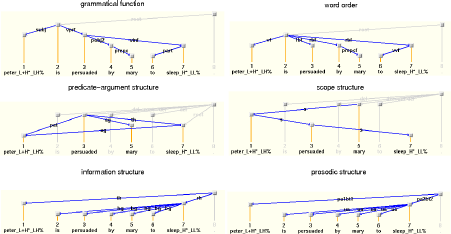

Extensible Dependency Grammar (XDG) is a general framework for dependency grammar, with multiple levels of linguistic representations called dimensions, e.g. grammatical function, word order, predicate-argument structure, scope structure, information structure and prosodic structure. It is articulated around a graph description language for multi-dimensional attributed labeled graphs.
An XDG grammar is a constraint that describes the valid linguistic signs as n-dimensional attributed labeled graphs, i.e. n-tuples of graphs sharing the same set of attributed nodes, but having different sets of labeled edges. All aspects of these signs are stipulated explicitly by principles: the class of models for each dimension, additional properties that they must satisfy, how one dimension must relate to another, and even lexicalization.
XDG-related papers: My Papers and XDG papers by other researchers.
XDG-related talks and posters: My talks (and posters).